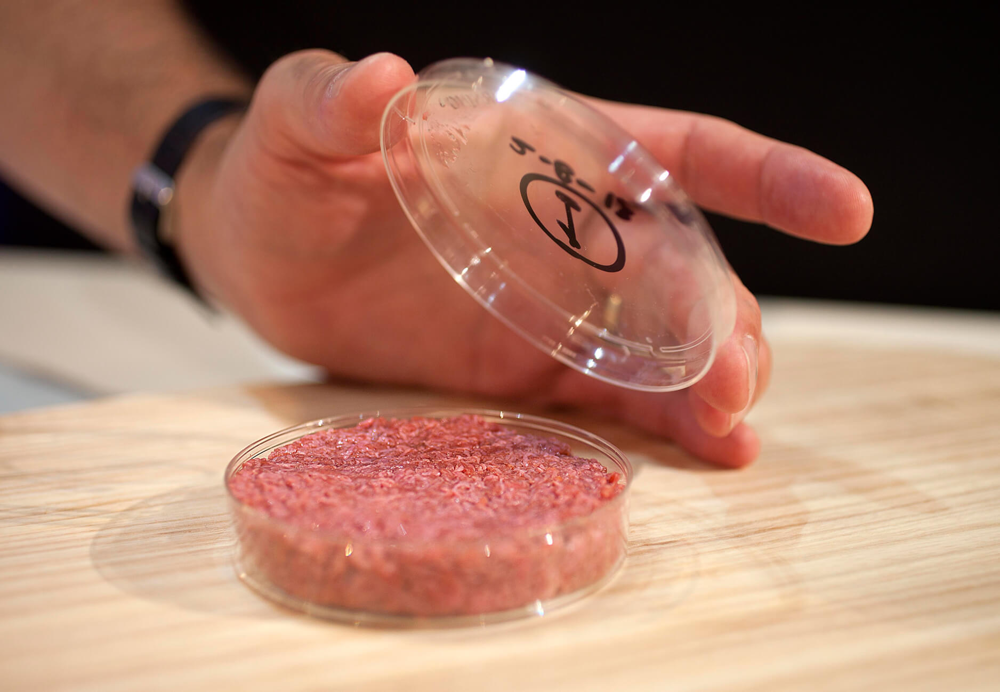

Cultured meat is meat produced from cellular agriculture using tissue engineering techniques. Like common meat alternatives like the Beyond Burger and Impossible Meat, lab-grown meat provides an alternative method of meeting daily protein intake requirements with great opportunities in health, environmental, cultural, economics. Since its inception, large scale production of cultured meat has troubled investors because of its high cost of research and investment. However since 2013, advances in medicine and technology have reduced the cost of producing a cultured burger from roughly $300,000 to $11.36. Leading developers of cultured meat, like Memphis Meats, expect to bring a product to market by 2021.
The world is expected to face food shortages as demand for meat is expected to increase by more than ⅔. In addition, livestock contributes to emissions in greenhouse gases through unchecked releases of methane, a greenhouse gas 20x more potent than carbon dioxide. This increased demand for food, and specifically meat, will drive up emission levels of methane, carbon dioxide, and nitrous oxide, exacerbating the effects of global warming and the loss of biodiversity. Production of cultured meat will be able to provide not only an incredible reduction of 78-98% in greenhouse gas emissions, but also drastic reductions in land, water, and energy use.
Due to the niche nature of lab-grown meat, the technology requires extensive proprietary research and knowledge to develop. Maple Leaf Foods is incapable of using its core business model to complement this venture as they are a pure-play food manufacturer.
Consequently, Maple Leaf Foods should acquire a 5% stake in Memphis Meats and Just, Inc, the two leaders in the cultured meat segment in North America - this will give Maple Leaf Foods greater power and oversight of the industry. In addition, Maple Leaf Foods should attempt to get onto the board of directors to better control key business decisions. A major liability is the tail-end risk derived from the possibility that the cultured meat segment will cannibalize traditional meat products. However, the benefits of investing early, heavily outweighs the downsides, as Maple Leaf Foods also displays its support for forward-thinking sustainable products that may one day become part of their core competencies.